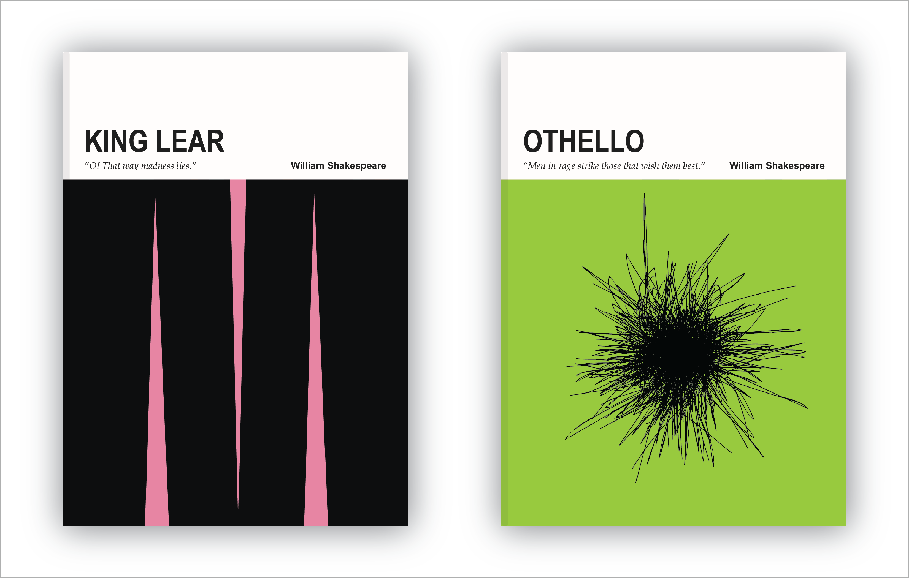

I’m fascinated by the cohesiveness of visual artifacts that are a part of a series. Of course, they aren’t always designed to be similar to one another, but I find it to be intriguing when they are. I chose to design a series of book covers not only because I love the look of a set of books but also because covers have a profound effect on how we experience a book. People say, “don’t judge a book by its cover”, but I often do. I pay attention to the color, type, and hierarchical choices on them. When I see one, I expect it to give me some information of the story; therefore, affecting my perception of the story before even reading it. However, book cover designs aren’t always going to tie into the story, but my goal with this project was to provide some sort of narrative information on the covers, and to do so as minimally as possible. Here's a full version of all of them.
One source of inspiration for the covers was an assignment I had in a visual design class where I had to visually depict the concepts of “war” and “peace” using only basic shapes. I liked the idea of taking an abstract idea and representing it using simple objects, so I decided to extend it to this project.
Each cover depicts a concept from the story that has been abstracted to a simpler form. I also made careful use of color. Not only did I want to use colors that I felt were representative of the stories, but I also wanted to use color combinations that would make the covers “pop”.

All in all, I’m satisfied with the end results; I feel as if all of my goals were met. If I were to attempt this project again, I would extend the designs so that they are book jackets rather than just the front covers, and I would also work on creating more covers for Shakespeare’s works.